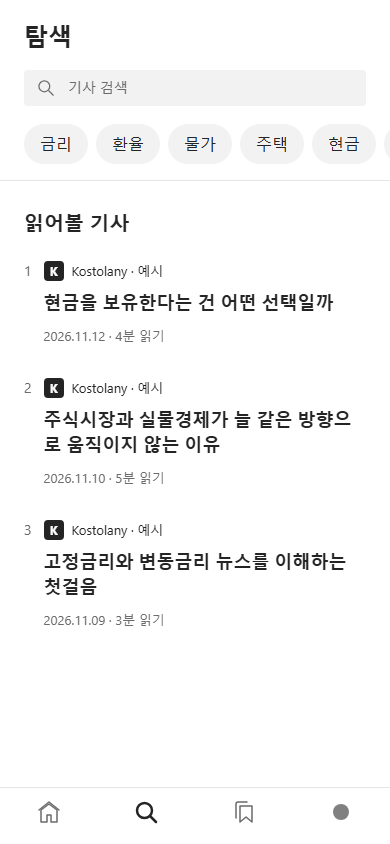
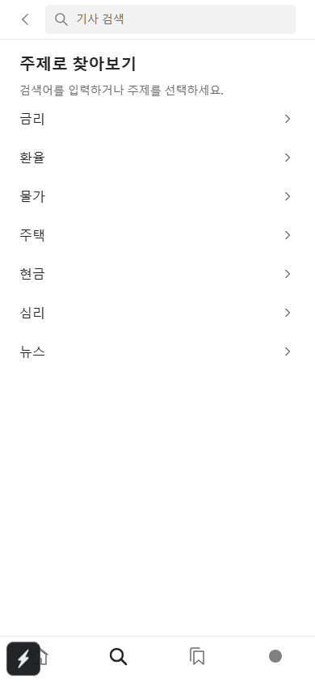
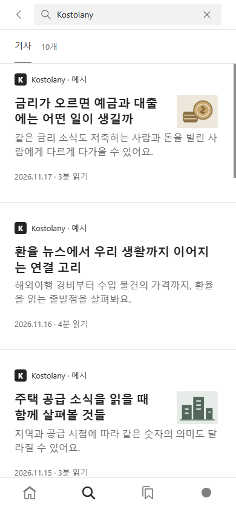

1. 탐색 첫 화면



제목 → 회색 검색창 → 가로 주제 칩 → 구분선 → 순번 기사 목록 구조. 실제 인기 집계를 하지 않으므로 ‘읽어볼 기사’와 고정 예시 3개를 사용했다. 글쓰기·유료 배지는 이번 범위에서 제외했다.
2. 빈 검색어



뒤로 가기·검색창·주제 제목·오른쪽 화살표 행을 반영했다. 자체 안내 한 줄을 추가했다. 금융 주제 7개는 같은 기사 검색을 실행하는 바로가기이며 Medium의 토픽 계층·팔로우 기능을 구현한 것은 아니다.
3. 기사 검색 결과



검색창·지우기·활성 분류 밑줄 → 출처 → 왼쪽 제목/오른쪽 이미지 → 전체 폭 요약 → 메타데이터 → 구분선. 기사만 검색하며 사람·발행물·토픽·리스트 유형은 제외했다. 반응·저장·더보기는 후속 범위로 남겼다. 자체 한글·삽화·날짜·읽기 시간 때문에 줄 수와 카드 높이는 다르다.